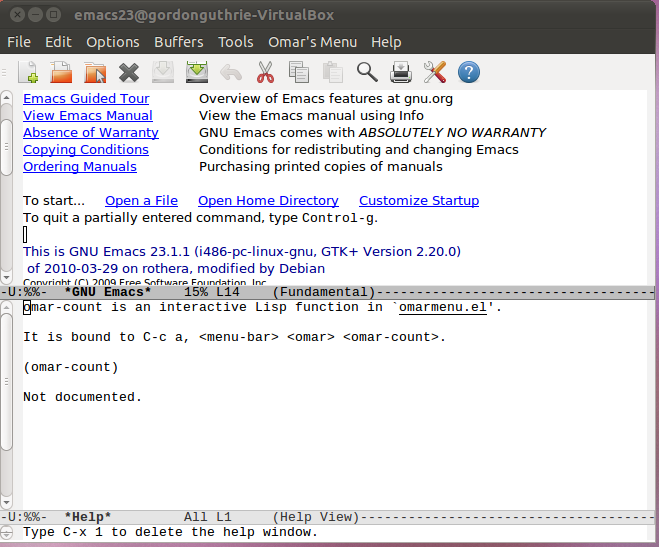

Lesson 5-2 - Working With Buffers (1)¶
Introduction¶
We need to learn how to programme Elisp a bit better, and the best way to do that is to write some programmes that add functionality to Emacs itself.
In this lesson we are going to:
add a menu to Emacs
call functions from that menu which operate on the current buffer
To do that we will create a file of Elisp which will:
define some functions
add an Emacs menu bound to those functions
We will then edit the .emacs file to load our Elisp file at start up.
Preparing Our Elisp File¶
Create a new file called omarmenu.el in the directory ~/.emacs.d/omars-dir/ and type the following code in:
(defun omar-count ()
(interactive)
(message "When we have finished this will count the number of words in the current buffer"))
(defvar menu-bar-omar-menu (make-sparse-keymap "Omar"))
(define-key-after global-map [menu-bar omar]
(cons "Omar's Menu" (make-sparse-keymap "Omar")))
(define-key global-map [menu-bar omar omar-count]
'(menu-item "Count" omar-count
:help "Will eventually count words in the current buffer!"))
(global-set-key (kbd "C-c a") 'omar-count)
(provide 'omarmenu)
Then open your .emacs file in your home directory add the following lines - You might want to delete everything that is in it first:
(add-to-list 'load-path "~/.emacs.d/omars-dir")(require 'omarmenu)All we have done is create an empty function (it prints When we have finished this will count the number of words in the current buffer into the modeline).
We have then created a menu called Omar’s Menu with one item Count. We have then bound Count to the approved user key-shortcut [C]-c a.
Finally omarmenu.el announes to the world that it provied omarmenu.
We have then edited the .emacs file telling it to look for Elisp programmes in the directory ~/.emacs.d/omars-dir/ and asking it to load the functionality of omarmenu.
If you have been editing these files (or any files) in Emacs then close it and reopen it.
Emacs should load its .emacs file and add a menu item to the menubar.
Click on the menu-item Count and the message should print in the modeline.
What we will do in this and subsequent lessons is fill in the empty function Count until it can count the words in the current buffer.
Examining Our Function¶
We are going to use a lot of Emacs functions to write our function omar-count so we need to learn how to look up their documentation.
Let’s start by examining our own function. We will use the built-in Emacs function describe-function. It can be called in the usual way:
[M]-x describe-function
then enter omar-count into the modeline.
You should see something like this:
Let’s add a proper function definition for our function. Edit omarmenu.el:
(defun omar-count ()(interactive)"This function counts the number of words in the current buffer"(message "When we have finished this will count the number of words in the current buffer"))To see this help string in action you will need to either select the menu item Emacs-Lisp -> Evaluate Buffer or close and re-open emacs before typing [M]-x describe-function
Implementing The Function¶
Now that we have the function wired in, lets make it do what it says on the tin. Edit the function to look like this:
(defun omar-count ()"This function will count the number of words in the current buffer."(interactive)(let ((count 0))(goto-char (point-min))(while (< (point) (point-max))(forward-word 1)(setq count (1+ count)))(message "Buffer has %d words." count)))Let’s see what this function does. It starts by defining a local variable count using the let operator. Note that the brackets which include let cover the whole rest of the function. We will look at local and global scope of variables in the next lesson.
The next function call is (goto-char (point-min)). We can use describe-function to work what that does. Executing [M]-x describe-function for goto-char and it prints the following:
goto-char is an interactive built-in function in `C source code'.It is bound to <menu-bar> <edit> <goto> <go-to-pos>.(goto-char position)Set point to position, a number or marker.Beginning of buffer is position (point-min), end is (point-max).The return value is position.We can repeat this exercise and see that point, point-min and point-max are all functions that evaluate, respectively, to:
the current position of the cursor in integer characters from the start of the buffer
the position of the start of the buffer - (usually 1 but you can monkey about with where you can start editing the buffer from)
the position of the end of the buffer
Note that there are functions that return values, but not the names of variables. The only way to tell them apart is to try and evaluate point as both a variable and a function in the scratch buffer:
point ;;this is how you evaluate a variable(point) ;;this is how you evaluate a functionAttempting to evaluate it as a variable will drop you into the debugger.
The function is then pretty straight forward to understand. Step through the buffer, word-by-word, incrementing the value of count every time you do. At the end print out the value of count.
Open a file on your system and try out the function. You will notice that that the omar-count actually moves the cursor - it is not some sort of virtual cursor, got-char and forward-word actually move the cursor. This behaviour is sub-optimal from a user perspective.
It can be cured by using a special function save-excursion. Edit the function to add wrap the body our count function in it as shown below:
(defun omar-count ()"This function will count the number of words in the current buffer."(interactive)(save-excursion(let ((count 0))(goto-char (point-min))(while (< (point) (point-max))(forward-word 1)(setq count (1+ count)))(message "Buffer has %d words." count))))Running describe-function tells us:
save-excursion is a special form in 'C source code'.(save-excursion &rest body)Save point, mark, and current buffer; execute body; restore those things.Executes body just like 'progn'.The values of point, mark and the current buffer are restoredeven in case of abnormal exit (throw or error).The state of activation of the mark is also restored.This construct does not save `deactivate-mark', and thereforefunctions that change the buffer will still cause deactivationof the mark at the end of the command. To prevent that, bind'deactivate-mark' with 'let'.What You Have Learned¶
You have learned:
how to build and plumb in a function from end-to-end
how to interrogate source code in Elisp to try and work out what things do
some basic cursor operations
how to restore the users state once you have manipulated it
Additional Reading¶
When writing this lesson I decided on a function which counted the words in a buffer. Whilst trying to work out how to do it I stumbled upon Chapter 11 of Learning GNU Emacs which has a function to do precisely this.
The rest of Chapter 11 is worth reading.
Extra Activities¶
Try and work out how to count the paragraphs and sentences in a buffer.